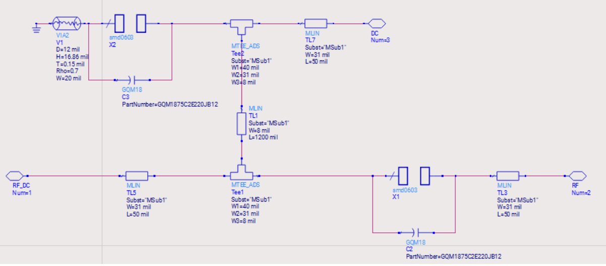

This project focused on the design and simulation of a single-stage microwave amplifier optimized for maximum gain using Keysight ADS. The amplifier was designed around a BFR182 transistor biased at VCE = 8.0 V and IC = 10 mA, with a final design frequency of 1.3 GHz.
The RF circuitry combines distributed microstrip transmission lines with lumped Murata components for the bias-tee, impedance-matching, and stability networks. Layout-aware design principles and Momentum electromagnetic (EM) co-simulation were utilized to account for transmission-line geometry, component placement, and parasitic interactions.
Initial amplifier topology detailing transistor selection, DC operating point, and top-level block arrangement for maximum gain optimization at 1.3 GHz.
Microwave amplifier top-level schematic in Keysight ADS.
Distributed microstrip transmission-line networks paired with lumped Murata components designed to deliver stable DC bias (VCE = 8.0 V, IC = 10 mA) while isolating the RF signal path and minimizing parasitic loss.

Distributed and lumped bias-tee network schematic and modeling.
Stability networks incorporating resistive elements and frequency-dependent components whose self-resonant behavior produces effective shorts or opens at specific out-of-band frequencies. This yields unconditional stability from 10 MHz to 6 GHz without degrading gain at 1.3 GHz.

Stability factor (K-factor) and stability circle analysis across frequency.
Input and output impedance-matching networks constructed with distributed microstrip lines and select lumped Murata components to transform source and load impedances for maximum gain and minimal reflection at 1.3 GHz.

Input and output microstrip matching networks at the 1.3 GHz design frequency.
Momentum 2.5D electromagnetic simulation combined with Keysight ADS circuit simulation to evaluate coupling, parasitic effects, and physical layout geometry across the RF PCB structure.

Momentum EM mesh layout and EM/circuit co-simulation setup.
Full S-parameter verification demonstrating gain, input/output return loss, and stability metrics across the operating band.

Final simulated S-parameter response (S21, S11, S22).
Design Conditions: BFR182 • VCE = 8.0 V • IC = 10 mA • f = 1.3 GHz
Tools & Resources: Keysight ADS, Momentum EM Simulator, Murata RF Components, Microstrip Transmission-Line Models, Microwave Engineering by David M. Pozar.
Skills: Microwave amplifier design, S-parameter analysis, microstrip transmission-line modeling, distributed bias-tee & matching network design, stability analysis, RF PCB layout, practical component selection, Momentum EM/circuit co-simulation, parasitic analysis.
EE Portfolio • Department of Electrical and Computer Engineering • Iowa State University